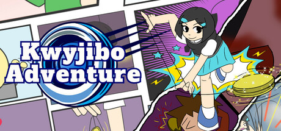

Arknights
Level Designer on Arknights at Hypergryph, contributing to level, character, and gameplay design.
Level Designer
Level Designer / Game Designer / Developer
Level Designer on Arknights at Hypergryph.
Also an independent game developer with an undergraduate background in neuroscience research.
Level Designer on Arknights at Hypergryph, contributing to level, character, and gameplay design.
Level Designer

A 3D turn-based combat game built around a magic yo-yo. Play as Emily, a new kid at school, and fight bullies with yo-yo tricks and mystic spells.
Producer, responsible for the main design and a substantial portion of the code.
Released on Steam on April 7, 2025.
Student work · No longer maintained

A time-puzzle platformer inspired by Braid. Originally made for Ludum Dare 51, now available on Steam and Nintendo Switch.
Created half of the levels, programmed some of the mechanics, and contributed pixel art.
Student work · No longer maintained